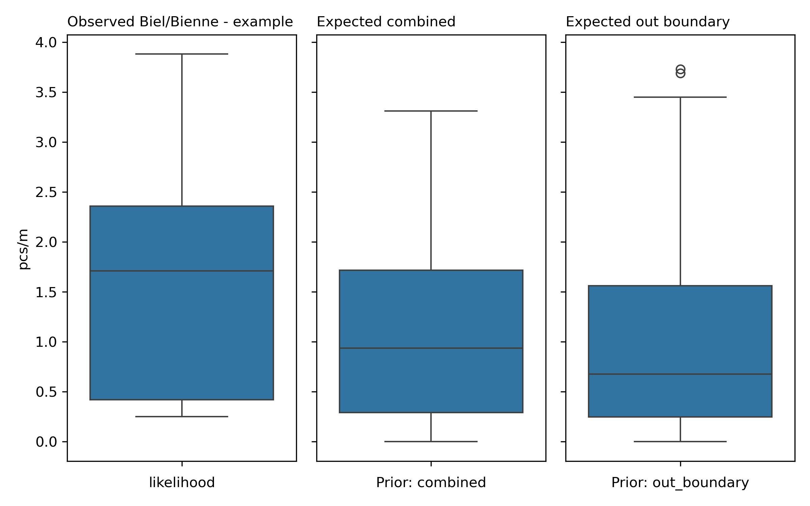

Biel/Bienne - example city#
Summary and analysis of observations of trash density: objects related to tobacco and food and drink found in lakes and rivers. Report number: Biel/Bienne - example city 2020-01-01 2021-05-31
Proof of concept: llm assissted reporting grid forecasting example
Executive Summary#
The report covers the city of Biel/Bienne, analyzing data from January 1, 2020, to March 31, 2021. The survey includes one river (Schüss) and one lake (Bielersee). A total of 17 samples were collected, with an average of 1.62 pcs/m, a median of 1.71 pcs/m, a maximum of 3.88 pcs/m, and a standard deviation of 1.26. The survey identified 1,034 objects in total. The five most common objects found were cigarette filters (75.53% of total, fail rate 100%), and food wrappers (24.47% of total, fail rate 94.12%). All identified objects were composed of plastic.
Sampling stratification, which divides a population into distinct subgroups based on specific characteristics, was used to ensure accurate representation. The area was classified as mixed land use. The sampling stratification table revealed that areas where buildings occupied 40-60% of the buffer zone had the highest trash density, with an average of 2.00 pcs/m (76.5% of samples). Undefined land-use areas occupying 0-20% of the buffer zone had an average pcs/m of 1.62, indicating significant litter density in these areas as well.
Regression analysis was conducted using multiple models, with Bagging: Linear Regression showing the highest R² at -0.00 and an MSE of 0.89, indicating limited reliability in predictions. Feature importance analysis revealed that ‘streets’ (0.274337) and ‘buildings’ (0.218129) were the most significant predictors according to model feature importance, while ‘buildings’ (0.137264) and ‘streets’ (0.0350437) were most significant in permutation feature importance.
Grid approximation was employed to estimate the conditional probability of survey results exceeding specific values. The in-boundary prior had an average pcs/m of 1.13 and a median of 0.94, while the out-boundary prior had an average pcs/m of 1.02 and a median of 0.68. The observed average pcs/m was 1.62. Comparison with posterior results suggested a decrease in observed metrics, with posterior averages of 1.02 pcs/m (in-boundary) and 1.13 pcs/m (out-boundary). This indicates that future observations might show lower litter density compared to the current survey results.
Sample results#
The report covers the city of Biel/Bienne, which is the only city included in this analysis. The survey identifies one river, the Schüss, and one lake, the Bielersee; thus, there is a total of two water bodies documented. The sampling period spans from January 1, 2020, to March 31, 2021, within the survey area known as Aare. A total of 17 samples were collected, yielding an average of 1.62 pcs/m, a median of 1.71 pcs/m, a maximum of 3.88 pcs/m, and a standard deviation of 1.26. The total number of objects identified across these surveys is 1,034.
The most common objects found include:
Cigarette filters, with a fail rate of 100% (indicating they were found in all samples), comprising 75.53% of the total, with a density of 1.23 pcs/m and a total quantity of 781.
Food wrappers (candy, snacks) with a fail rate of 94.12%, making up 24.47% of the total, with a density of 0.39 pcs/m and a total quantity of 253.
The material composition of the identified objects is entirely plastic, representing 100% of the total count.
Sample results frequently asked questions
Frequently asked questions
What were the ten most common items found?
The report provides detailed information on two specific objects, which are:
Cigarette filters, with a fail rate of 100% (indicating they were found in all samples) and constituting 75.53% of the total.
Food wrappers (candy, snacks), with a fail rate of 94.12% and making up 24.47% of the total.
Are these objects found on European beaches? If so, is there any data on how many per 100 m of beach?
Yes, these objects are commonly found on European beaches. According to the OSPAR results from 2021, it was reported that cigarette butts and food wrappers are prevalent debris types. The data indicates that cigarette butts can reach up to 50 items per 100 meters of beach. For more detailed results, you can visit the OSPAR website: OSPAR Beach Litter Results 2021.
What are possible sources of these specific objects?
Possible sources of cigarette filters include littering by smokers in public spaces and near beaches. Food wrappers can be attributed to the consumption of packaged snacks and meals by beachgoers and picnickers, which often results in litter when proper disposal methods are not followed.
Which three cities had the highest average pcs/m? Which three had the lowest?
The report provides data only for the city of Biel/Bienne, which has an average of 1.62 pcs/m. Therefore, there is no comparative data available for other cities in this report to determine the highest or lowest averages.
| location | quantity | pcs/m | buildings | forest | undefined | recreation | public-services | |
|---|---|---|---|---|---|---|---|---|
| 0 | mullermatte | 967 | 2,00 | 0,49 | 0,38 | 0,11 | 0,03 | 0,04 |
| 1 | schusspark-strand | 33 | 0,36 | 0,78 | 0,18 | 0,04 | 0,04 | 0,06 |
| 2 | strandboden-biel | 34 | 0,42 | 0,60 | 0,28 | 0,07 | 0,03 | 0,04 |
Sampling stratification#
Sampling stratification refers to the process of dividing a population into distinct subgroups or strata, based on specific characteristics, to ensure that the sample accurately represents the population. In the context of this survey, land-use features within a buffer zone of 1,500 meters surrounding each survey location were analyzed to identify how different land uses contribute to litter density. The findings from the sampling stratification and trash density tables provide insight into the relationship between land-use types and the density of litter observed in various locations.
The highest pieces of trash per meter (pcs/m) values in the sampling stratification and trash density table for the categories of buildings, forest, undefined, and streets are as follows:
For buildings occupying 40-60% of the buffer zone, the average pcs/m is 2.00. This indicates that in locations where buildings occupy this proportion of the buffer, there is a significant amount of litter.
For undefined land-use occupying 0-20% of the buffer zone, the average pcs/m is 1.62. This is noteworthy as it reflects litter density in areas with an undefined categorization of land use.
| Proportion of samples collected | |||||||||
|---|---|---|---|---|---|---|---|---|---|
| buildings | wetlands | forest | public-services | recreation | undefined | streets | vineyards | orchards | |
| proportion of buffer | |||||||||
| 0-20% | none | 100.0% | 11.8% | 100.0% | 100.0% | 100.0% | 76.5% | 100.0% | 100.0% |
| 20-40% | none | none | 88.2% | none | none | none | 11.8% | none | none |
| 40-60% | 76.5% | none | none | none | none | none | none | none | none |
| 60-80% | 23.5% | none | none | none | none | none | none | none | none |
| 80-100% | none | none | none | none | none | none | 11.8% | none | none |
| Pieces of trash per meter | |||||||||
|---|---|---|---|---|---|---|---|---|---|
| buildings | wetlands | forest | public-services | recreation | undefined | streets | vineyards | orchards | |
| proportion of buffer | |||||||||
| 0-20% | none | 1,62 | 0,35 | 1,62 | 1,62 | 1,62 | 2,00 | 1,62 | 1,62 |
| 20-40% | none | none | 1,79 | none | none | none | 0,42 | none | none |
| 40-60% | 2,00 | none | none | none | none | none | none | none | none |
| 60-80% | 0,39 | none | none | none | none | none | none | none | none |
| 80-100% | none | none | none | none | none | none | 0,35 | none | none |
Sampling stratification frequently asked questions
Frequently asked questions
1. What does the sampling stratification table tell us?
The sampling stratification table provides a breakdown of the proportion of samples collected in relation to specific land-use features, allowing for the analysis of litter density across different areas. For example, in the buildings category, where the buffer zone is 40-60%, 76.5% of the samples were collected, resulting in an average pcs/m of 2.00. This indicates a high density of litter in that land-use scenario. In the undefined category with a buffer zone of 0-20%, 100% of the samples were collected, leading to an average pcs/m of 1.62. These values suggest that certain land-use conditions may be more prone to litter accumulation, highlighting areas that could require more attention for litter management.
2. How can the information in the sampling stratification and trash density table help identify areas of concern?
The sampling stratification and trash density table can highlight areas with particularly high litter densities, indicating potential environmental concerns. By evaluating the average pcs/m across different land uses, surveyors can identify which areas are most affected by litter. For instance, the high pcs/m associated with buildings occupying 40-60% of the buffer zone signals that urbanized areas may need targeted clean-up efforts or better waste management strategies. Additionally, the undefined land use exhibiting high litter density suggests that further investigation is warranted to clarify the land use and address potential litter sources.
3. Under what land-use conditions would a surveyor expect to find the most trash?
Surveyors would expect to find the most trash in areas where buildings occupy 40-60% of the buffer zone, with an average pcs/m of 2.00. This suggests that urban environments, particularly those with significant building presence, are likely to have higher litter densities. Additionally, the undefined land-use category at 0-20% shows an average pcs/m of 1.62, indicating that even in areas with less defined land use, litter may still accumulate significantly.
4. Given the results in the sampling stratification table, were these surveys collected in mostly urban environment or forested?
The surveys do not predominantly classify as either urban or rural. The sum of the proportions of samples for buildings in the rows 60-80% and 80-100% is 0.24 (23.5% + 0%), which does not exceed 50%, thus failing the urban classification. Similarly, the sum of the proportions of samples for forests in the same rows is 0 (both 60-80% and 80-100% have no samples), which does not exceed 50%, thus failing the rural classification. Therefore, the area is classified as mixed. The greatest proportion of samples for buildings is in the 40-60% category, which has 76.5% of samples collected. For forests, there are no samples collected in the higher categories, and the undefined land-use shows high values in the lower categories.
Linear and ensemble regression#
Cluster analysis, particularly K-means, is a method used to categorize data into distinct groups (or clusters) based on their features. In the context of the provided document, it was noted that there was insufficient data for a cluster analysis, and thus no clustering results could be presented, including the cluster with the highest pcs/m or its composition regarding buildings, forest, and undefined land use.
Linear regression is a statistical method used to model and analyze the relationship between a dependent variable and one or more independent variables. The basic assumptions of linear regression include linearity (the relationship between the variables is linear), independence (the residuals are independent), homoscedasticity (constant variance of residuals), and normality (the residuals are normally distributed). Ensemble regression, on the other hand, combines predictions from multiple regression models to improve the accuracy and robustness of predictions. Basic assumptions for ensemble methods can include those of the individual models used (e.g., linear regression) and the assumption that combining models will yield better performance than any single model alone.
In the regression analysis conducted, the model with the highest R² was the Bagging: Linear Regression model, which had an R² of -0.00 and a mean squared error (MSE) of 0.89. Given that the best model has a negative R², it indicates that the model performs worse than a simple mean model, which raises concerns about the reliability of predictions. The MSE value suggests that the model has a degree of error, further indicating limited reliability in its predictive capacity.
Linear methods frequently asked questions
Frequently asked questions
What were the r² and MSE of each test?
The regression analysis results are as follows:
Model |
R² |
MSE |
|
|---|---|---|---|
0 |
Linear Regression |
-0.10 |
0.98 |
1 |
Random Forest Regression |
-0.19 |
1.05 |
2 |
Gradient Boosting Regression |
-0.59 |
1.41 |
3 |
Theil-Sen Regressor |
-0.11 |
0.99 |
4 |
Bagging:Linear Regression |
-0.00 |
0.89 |
5 |
Voting |
-0.28 |
1.14 |
The analysis indicates that all models produced negative R² values, suggesting they do not fit the data well.
Given the r² and MSE of the different methods employed, how reliable do you think predictions would be based on these models?
The negative R² values across all regression methods indicate that none of the models fit the data well, resulting in unreliable predictions. The MSE values, while providing some measure of error, confirm that the predictions made by these models are likely to be inaccurate and should be interpreted with caution.
Can any conclusions be drawn from these results?
Conclusions that can be drawn from these results are limited due to the negative R² values. These results suggest that the models are not appropriate for the data, and therefore, any predictions or insights derived from them may not be valid or useful.
According to the cluster analysis what is the cluster that has the greatest average pcs/m? What is the distribution of land use values within the cluster?
According to the report, there was insufficient data for a cluster analysis, and thus no information could be provided regarding the cluster with the greatest average pcs/m or the distribution of land use values within any clusters.
Forecasts and methods#
A grid approximation is a statistical technique used to estimate the conditional probability of a survey result exceeding or equaling a specific value. It is constructed using an inference table, which organizes prior data, likelihood observations, and resultant posterior distributions. An inference table systematically presents these components, where “prior” refers to the information gathered from previous observations (in this case, observations from either inside or outside a designated boundary), and “posterior” denotes the updated probabilities derived from combining the prior data with new observations through Bayesian inference.
In the context of the report, the prior distributions are as follows:
In-boundary prior: Average pcs/m = 1.13, Median pcs/m = 0.94
Out-boundary prior: Average pcs/m = 1.02, Median pcs/m = 0.68
The average pcs/m results from the posterior distributions are compared to the observed results. The observed average pcs/m is reported as 1.62. The differences are:
In-boundary posterior: Average pcs/m = 1.02; Difference = 1.62 - 1.02 = 0.60
Out-boundary posterior: Average pcs/m = 1.13; Difference = 1.62 - 1.13 = 0.49
Given these results, one could expect a decrease in observed metrics compared to the posterior predictions. If a person takes one sample, they may have a 50% chance of noticing an increase or decrease from the observed results, given the variability indicated by the standard deviation of 0.96 for the out-boundary and 0.94 for the in-boundary samples. However, if they take two samples, their likelihood of perceiving a change would increase, as the sample mean would likely provide a more stable estimate due to the averaging effect.

Grid approximation frequently asked questions
Frequently asked questions
1. Why is grid approximation a reasonable modeling technique given the data?
Grid approximation is reasonable due to the distribution characteristics of the observed data. The average pcs/m is 1.62, while the median is 1.71. The difference between these two values suggests that the data may not be perfectly normally distributed, as the mean is lower than the median. If the data were normally distributed, one would expect the mean and median to be closer together. The implications of this difference indicate that while the grid approximation provides a useful estimation method, caution should be taken in making predictions, as the underlying distribution may skew the results.
2. Do you have an example of other fields or domains that use grid approximation or Bayesian methods?
Yes, grid approximation and Bayesian methods are employed in various fields, including ecology for species distribution modeling, finance for risk assessment and decision-making under uncertainty, and machine learning for probabilistic modeling and inference.
3. If the data is normally distributed, would the predictions from the grid approximation and the predictions from the normal distribution be different? If so, in what way?
If the data is normally distributed, predictions from the grid approximation may align more closely with those from a normal distribution model, particularly regarding the central tendency (mean and median). However, grid approximation might still provide a more nuanced view of variability and uncertainty by considering prior observations, whereas normal distribution predictions would depend solely on the parameters of the normal curve.
4. What is the difference between grid approximation and linear or ensemble regression?
Grid approximation focuses on estimating conditional probabilities based on prior and likelihood data, while linear regression models the relationship between independent and dependent variables to predict outcomes. Ensemble regression combines multiple models to improve prediction accuracy, whereas grid approximation does not necessarily involve the combination of models but rather uses a probabilistic framework to update beliefs based on new data.
5. With which posterior do we expect to find most? The least?
From the results, we expect to find most observations within the out-boundary prior posterior, which has a higher average pcs/m of 1.13 compared to the in-boundary prior posterior, which has a lower average pcs/m of 1.02.
6. If the in-boundary grid approximation predicts an increase or decrease, what does that say about the other samples from within the boundary?
If the in-boundary grid approximation predicts an increase, it suggests that elevated values were likely observed in other locations within the boundary. This is because the prior is comprised only of locations in the same geographic boundary, and the posterior is a weighted average of the prior and likelihood, indicating that the overall trend within the boundary is reflected in the predictions.
7. If the out-boundary grid approximation predicts an increase or decrease, what does that say about the other samples from outside of the boundary?
If the out-boundary grid approximation predicts an increase, it implies that locations outside of the boundary had elevated values compared to the likelihood. This suggests that there are significant observations in those external samples that influence the overall prediction.
8. How different are the expected results from the observed results? Should an increase or decrease be expected?
The expected results from the observed results indicate that both in-boundary and out-boundary averages are lower than the observed average of 1.62. Specifically, the in-boundary average is 1.02 and the out-boundary average is 1.13. This indicates a decrease should be expected in future observations based on the current posterior estimates, particularly considering the standard deviations of 0.94 and 0.96, suggesting variability that could lead to different outcomes in subsequent samples.
Consolidated results : canton, survey area#
| canton | quantity | pcs/m |
|---|---|---|
| Bern | 1'034 | 1,62 |
| parent_boundary | quantity | pcs/m |
|---|---|---|
| aare | 1'034 | 1,62 |
Inventory#
| quantity | pcs/m | % of total | sample_id | fail rate | object |
|---|---|---|---|---|---|
| 781 | 1,23 | 0,76 | 17 | 1,00 | Cigarette filters |
| 253 | 0,39 | 0,24 | 17 | 0,94 | Food wrappers; candy, snacks |